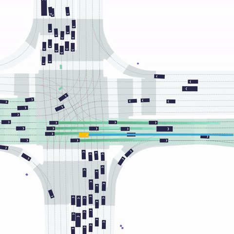

Diffusion-Based Planning for Autonomous Driving with Flexible Guidance
このリポジトリは、ICLR 2025 Oral採択論文 Diffusion-Based Planning for Autonomous Driving with Flexible Guidance の公式実装である。主張は明快で、拡散モデルを「後段のリファイン専用」ではなく、運動計画そのものの中核として使い、高性能な自動運転プランニングを実現することにある。
概要
READMEでは、Diffusion Plannerは、拡散モデルの表現力と柔軟性を使って自動運転プランニングを強化すると説明されている。特に、将来の車両軌跡に加えるノイズと条件情報を融合するDiTベースのアーキテクチャ、周辺エージェント状態の共同モデリング、そして20Hz前後のリアルタイム推論を打ち出している。
方法
- DiTベースのアーキテクチャで、ノイズ付加された未来軌跡と条件情報を融合する
- 主要交通参加者の状態を共同モデリングし、運動予測と閉ループプランニングを未来軌跡生成として統一する
- 拡散サンプリング時の高速推論を実現し、実時間動作へ寄せている
nuPlanでの閉ループ性能
READMEには、nuPlan上の閉ループ評価結果が掲載されている。学習ベース手法の比較では、Diffusion Plannerは Val14、Test14-hard、Test14 の複数条件で最上位クラスのスコアを出している。さらに、refine付き構成では、ルールベース / ハイブリッド系との比較でも非常に高い数値を示している。
掲載テーブルから読み取れる論点は、Diffusion Plannerが単に拡散モデルを使っているだけではなく、従来の学習ベース手法に対して閉ループ性能をかなり押し上げていること、そしてリファインあり・なしの両方で強いことにある。
定性結果



READMEでは、狭路での旋回や複数車両との相互作用など、難しいシナリオでの将来軌跡生成例が示されている。拡散モデルを用いる利点として、単一モード回帰よりも柔軟に多様な妥当候補を扱えることが視覚的に伝わる。
セットアップ
実行にはnuPlanデータセットの準備と、`nuplan-devkit` および本リポジトリのPython環境構築が必要である。READMEには、評価用チェックポイントの取得、閉ループ評価スクリプト実行、Jupyterベースの可視化、学習用前処理と学習実行の流れが具体的に書かれている。
この実装の価値
論文だけでなく、実際の評価手順、チェックポイント、定性結果、ガイダンスデモまで揃っているため、拡散ベースプランニングを再現・検証したいときの入口として使いやすい。特に、nuPlanで拡散モデルがどの程度プランニングに効くのかを現実的な閉ループ設定で確認したい場合に有用である。
位置付け
拡散モデルを自動運転の世界モデルやポリシー生成へ使う流れは増えているが、このリポジトリは「運動計画そのもの」で性能を出している点が強い。エンドツーエンド系やマルチモーダル計画系を追う中で、実装付きの代表例として押さえておく価値がある。